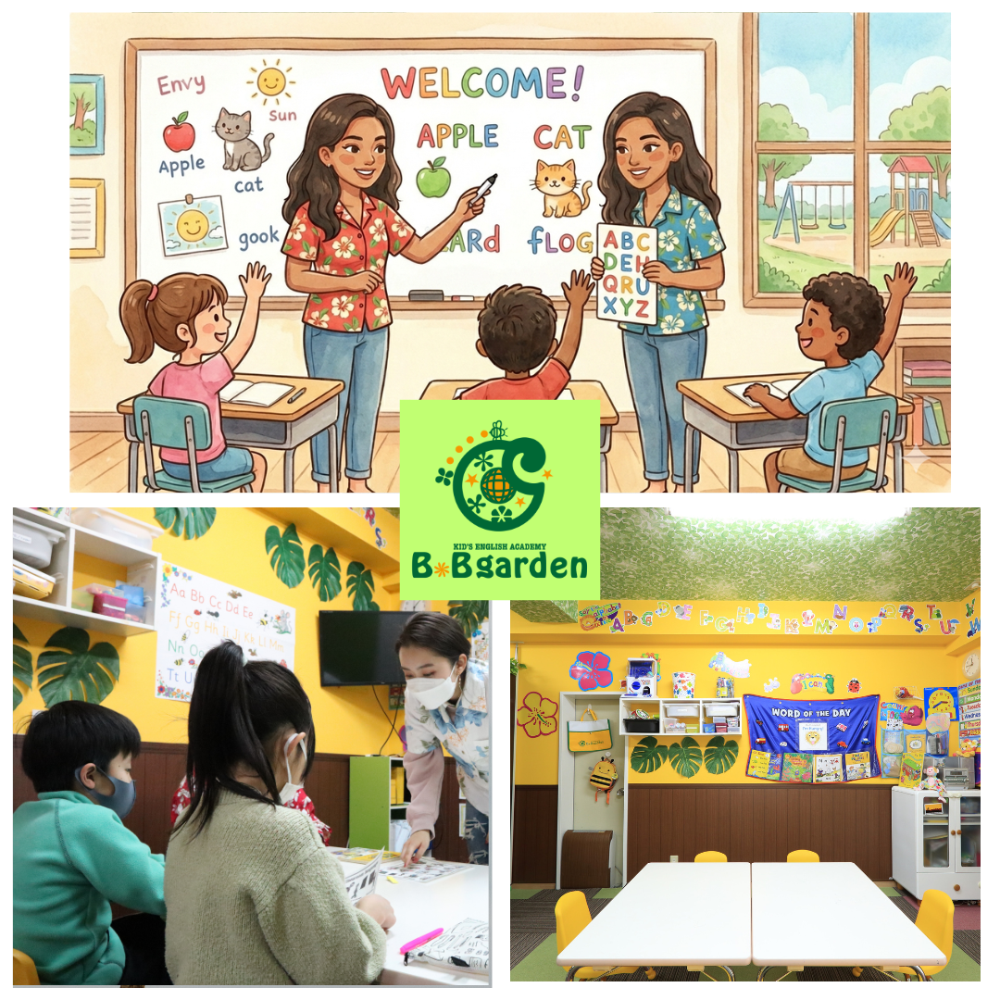
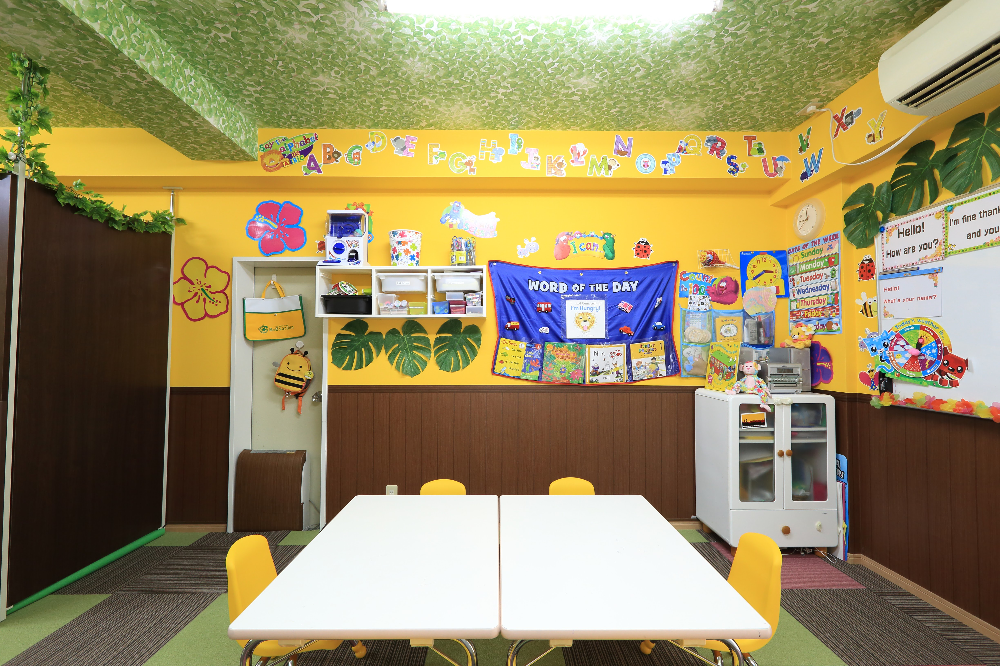
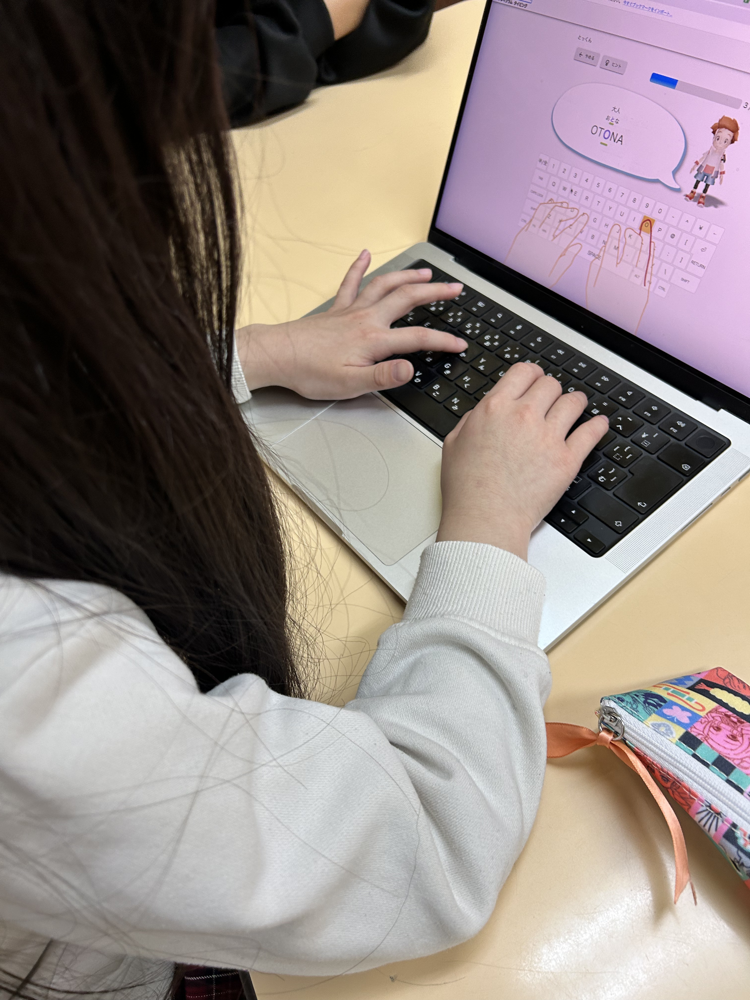

英語×プログラミング×コーチングで子どもの"成長"を設計するオンラインフリースクール
B.Bgardenは、お子様の「好き」を将来の武器に変えるオンラインフリースクールです

私たちが選ばれる5つの理由
ネイティブ講師との英会話や、現役エンジニアによるプログラミング、そして対話を大切にするコーチングを組み合わせ、楽しみながら「自分で進む力」を育みます。
三鷹市牟礼に「リアルな教室」があるから、オンラインだけで終わりません。月1回のスクーリング（登校日）で仲間と直接会って交流したり、先生と対面で相談したりすることもできます！。
運営するのは、教育現場を熟知した元高校教師（中学校社会、高等学校地歴公民の教員免許保持）。現在はITエンジニアをしているので、学校の枠にとらわれず、ITの知識も活かしながら、お子様が安心して一歩を踏み出せる環境を設計しています！。
希望者はフィリピン・セブ島への短期留学プログラムに参加可能。提携先の留学スクールで、本物の英語力が身につきます。親子留学も提供しているので、保護者の方も海外がもっと身近に感じられます。
お子様だけでなく、保護者の方へのサポートも充実。少人数制だからできる「通わせて終わりではない」サポートを受けられます。定期的な面談や情報共有で安心して私たちにお任せいただけます。
B.Bgarden 代表
ぶらぶら

B.Bgarden フリースクール代表
元公立高校教師として10年以上の指導経験を持つ。教員を退職後、フィリピンセブ島に移住しエンジニア兼プログラミング講師として活動。教員・海外での経験を通して、「学校以外の学びの場」の必要性を痛感し、B.Bgardenフリースクールを設立。教育だけではなく、ビジネス・IT・グローバルな視点から教育を実践している。

東京都三鷹市牟礼に「B.Bgarden」があります。月1回のスクーリングでは、仲間と一緒に学び、発表し、交流する場を提供しています。井の頭公園の近くにスクールがあるので、外でのアクティビティも充実しています。私たちはオンラインでは得られないリアルなつながりを大切にしています。
B.Bgardenのカリキュラムは、単なる学習支援ではありません。お子様の「好き」を将来の武器に変えるための、ワクワクが詰まった「成長設計図」です。
主要5教科にも対応。元高校教師がお子様の「わからない」を一緒に解消しながら学習を進めていきます。
ネイティブ講師によるオンライン英会話と、日常会話から定期テスト対策まで対応したカリキュラム。楽しみながら英語を身につけます。
Minecraft・Python・Webデザインなど、レベルに合わせて学べるプログラミング教育。作る喜びを通じて論理的思考力を育てます。
目標設定・振り返り・自己肯定感の向上をサポートするコーチングセッション。お子様が自分の力で前に進める力を育てます。

おうちにいながら充実した1日を
「おはよう！」から始まる、ゆるやかなつながりを大切にしています。
学習アプリや先生のサポートで自分のペースで学習を進めます。
英会話レッスンやプログラミング学習で、学校では学べないことを学んでいきます。
ゆっくりランチタイム。バーチャル空間で仲間とおしゃべりしながら食事を取ります。
好きなテーマで作品制作や探究学習。「好き」を深める時間を私たちは大切にしています。
今日の学びを記録し、次の目標を立てます。達成感を積み重ねることで自己肯定感を育みます。
週1日プランなら、補助金で実質負担なし！（※東京都限定）
まずはお気軽にご相談ください。
※補助金申請・出席認定サポートがあります。実質負担が大幅に軽減され、お子様が学校に出席した扱いにすることが可能です。
無料相談はこちら在籍している学校と連携し、B.Bgardenでの学習を出席として認定してもらうためのサポートを行います。学校との面談同行や書類作成のサポートも対応しております。詳しくはお気軽にご相談ください。
東京都の「フリースクール等利用者支援事業」により、授業料（利用料）に対して月額最大2万円の助成金を受け取ることができます。この制度を活用することで、授業料の自己負担額を実質0円に抑えてご利用いただくことが可能です。補助金の申請手続きについても丁寧にサポートいたします。詳細は無料相談でご確認ください。
はい、オンライン授業の受講にはパソコンまたはタブレット（カメラ・マイク付き）が必要です。インターネット環境もご用意ください。機器の選び方についてもご相談いただけます。
もちろん大丈夫です！入会時にレベルチェックを行い、お子様の現在の状況に合わせた個別カリキュラムを作成します。完全初心者から始めているお子様も多く在籍しています。
スクーリングは参加を推奨していますが、体調やお子様の状況、住んでいる地域によっては欠席も可能です。私たちはお子様のペースを最優先に考えています。
はい、月単位でプランの変更が可能です。お子様の成長や状況の変化に合わせて柔軟に対応いたします。変更希望の場合は前月の10日までにご連絡ください。
はい、オンラインですが、生徒同士で協力して課題に取り組んだり、一緒に授業を受けたりするので、自然と友だちができるきっかけがあります！月1回のスクーリングで、リアルに友だちと交流することもできます。
以下の中からお問い合わせしやすい形で
ご連絡ください！
問い合わせ番号
070-9199-5119 （受付時間：平日 10:00〜18:00）メールアドレス
bc-contact@beancode.jp公式ホームページ
こちらからご確認ください公式LINE
お気軽に教室までお越しください